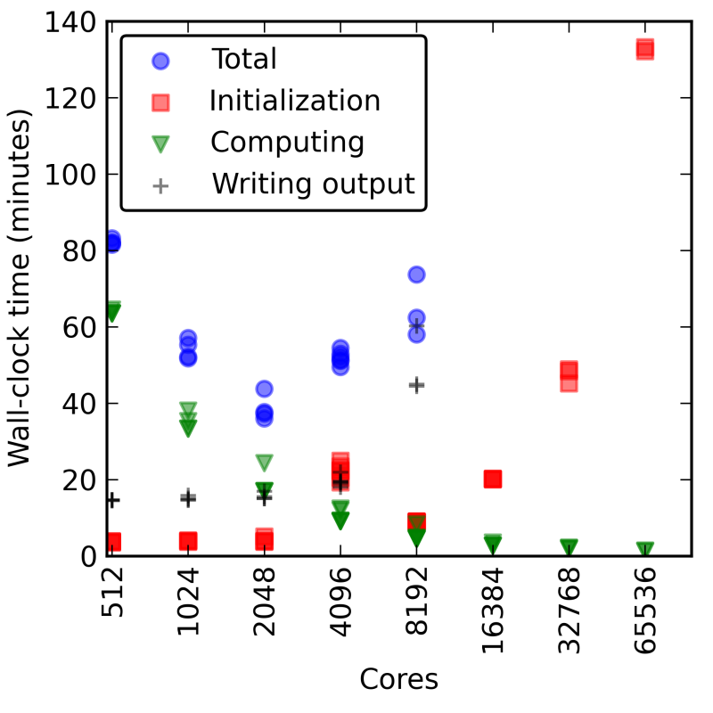
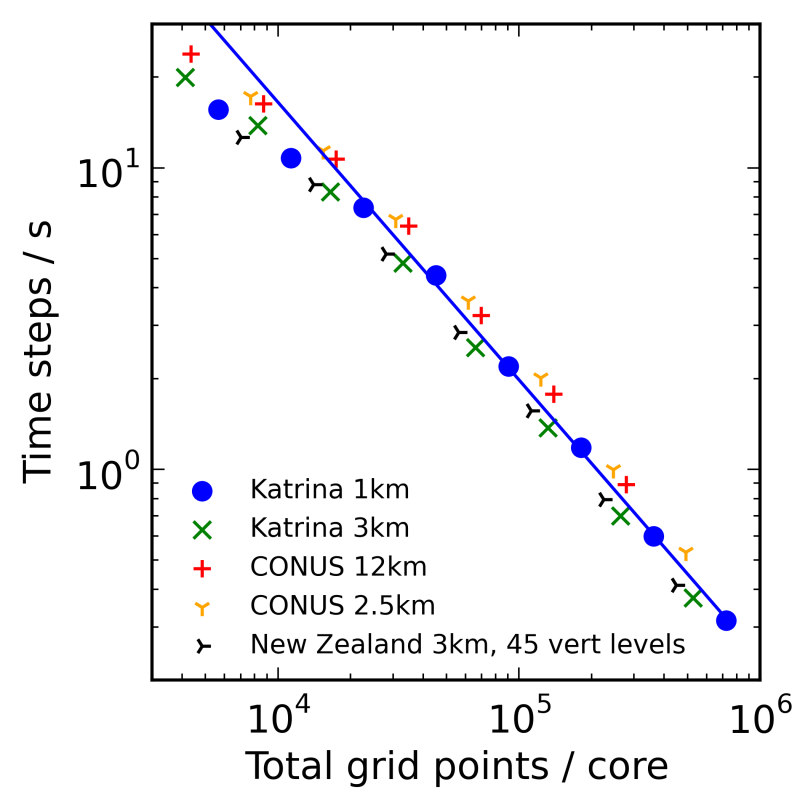

Weather Research and Forecast (WRF) Scaling, Performance Assessment and Optimization
NCAR SIParCS Program
Table of Contents
This is still very much a work in progress!
Abstract
The Weather Research and Forecast (WRF) model is a parallel mesoscale numerical weather forecasting application used in both operational and research environments. The performance of WRF on NCAR’s Cheyenne supercomputer was investigated, focusing primarily on run time and compile time settings. The latest Intel (18.0.1) and Gnu (8.1.0) compilers were compared with different compilation flags. We found the Intel compiler to be consistently faster than Gnu at various optimization levels. Various MPI libraries were tested, including MPT, MVAPICH, Intel MPI, MPICH. We found that openMPI, MPT, and MVAPICH show similar runtime performance while the performance of MPICH was poor and Intel MPI’s performance scaled poorly to large node counts. Several benchmark cases were developed for the latest version of WRF (4.0) at different resolutions and utilizing the CONUS and tropical physics suites. The scaling results of these benchmark cases were used to give users of Cheyenne recommendations on how to run WRF in a timely and efficient manner. Additionally we compared the scaling of WRF’s initialization time, I/O time, and computation time and found better scaling to very large node counts than with previous WRF versions on NCAR’s previous supercomputer, Yellowstone.
Background
The Weather Research and Forecast Model
The Weather Research and Forecast (WRF) model is a parallel mesoscale numerical weather forecasting application used in both operational and research environments. WRF is among the more commonly run codes by atmospheric scientists on NCAR’s Cheyenne supercomputer. Hence it is very important for WRF’s users to know how to obtain the best performance of WRF on Cheyenne, especially as users scale their runs to larger core counts.

Cheyenne
- 4,032 computation nodes
- Dual-socket nodes, 18 cores per socket
- 145,152 total processor cores
- 2.3-GHz Intel Xeon E5-2697V4 (Broadwell) processors
- 16 flops per clock
- 5.34 peak petaflops
- Dual-socket nodes, 18 cores per socket
- 313 TB total system memory
- 64 GB/node on 3,168 nodes, DDR4-2400
- 128 GB/node on 864 nodes, DDR4-2400
- Mellanox EDR InfiniBand high-speed interconnect
- Partial 9D Enhanced Hypercube single-plane interconnect topology
- Bandwidth: 25 GBps bidirectional per link
- Latency: MPI ping-pong < 1 µs; hardware link 130 ns
Intro
Test cases
conus12kmandconus2.5km- Official CONUS benchmarks from http://www2.mmm.ucar.edu/wrf/WG2/benchv3/
- Benchmarks no longer maintained
- Only works on WRFV3.8.1 or earlier
wrfbdygenerated using WRFV2.2 andwrfrstgenerated using WRFV3.2beta provided
katrina1kmkatrina3km- cases based upon Katrina single domain case in WRF-ARW online tutorial (http://www2.mmm.ucar.edu/wrf/OnLineTutorial/CASES/SingleDomain/index.html)
- Same domain and similar physics but higher resolution
- cfl errors encountered often, especially with
1kmresolution- Mostly likely due to high vertical winds over mountain ranges in Mexico
new_conus12kmandnew_conus2.5km- Based on official CONUS benchmarks
- 12km and 2.5km vertical and horizontal resolution respectively
- Use CONUS Physics suite introduced in WRFV3.9 instead of physics used in above official CONUS benchmarks
cu_physics = 0fornew_conus2.5- NCEP GFS 0.25 deg input data for 2018-06-17
- 6 hour run, model output at 0, 3, 6hrs, restart file at 6hrs
maria3kmandmaria1km- 3km and 1km vertical and horizontal resolution respectively
- TROPICAL Physics suite with
cu_physicsdisabled andsf_sfclay_physics = 1
| case | ewe | esn | total gridpoints | timestep | run hours |
|---|---|---|---|---|---|
conus12km |
425 | 300 | 127,500 | 72 | 3 |
conus2.5km |
1901 | 1301 | 2,473,201 | 15 | 6 |
new_conus12km |
425 | 300 | 127,500 | 72 | 6 |
new_conus2.5km |
1901 | 1301 | 2,473,201 | 15 | 6 |
maria1km |
3665 | 2894 | 10,606,510 | 3 | 1 |
maria3km |
1396 | 1384 | 1,932,064 | 9 | 3 |
Compilers
- GNU Compiler Collection (GCC) versions 6.3.0, 8.1.0
- WRF compiles with
-O2by default -O3: enables all-O2optimization along with optimizations such as function inlining and loop vectorization-Ofast: enables all-O3optimizations along with disregarding strict standards compliance (such is for floating point operations)-mfma: enables Fused Multiply-Add instruction set-march=native: enables target instruction set to be everything supported by the compiling machine
- WRF compiles with
- Intel Compiler versions 17.0.1, 18.0.1
- WRF compiles with
-O3by default -Xhost: similar to GNU’s-march=native-fp-model fast=2: similar to GNU’s-Ofastoptimization
- WRF compiles with
Observations
Compilation issue with gnu > 6.3.0 and WRF < V4.0
This likely require a source patch to fix, not an environment or compiler issue
module_cu_g3.f90:3132:41:
call random_seed (PUT=seed)
1
Error: Size of ‘put’ argument of ‘random_seed’ intrinsic at (1) too small (12/33)
new_conus12km on WRFV4.0 exceeds minimum patch size on >= 32 nodes (36 cpus per node)
taskid: 0 hostname: r14i1n17
module_io_quilt_old.F 2931 F
Quilting with 1 groups of 0 I/O tasks.
Ntasks in X 32 , ntasks in Y 36
*************************************
Configuring physics suite 'conus'
mp_physics: 8
cu_physics: 6
ra_lw_physics: 4
ra_sw_physics: 4
bl_pbl_physics: 2
sf_sfclay_physics: 2
sf_surface_physics: 2
*************************************
For domain 1 , the domain size is too small for this many processors, or the decomposition aspect ratio is poor.
Minimum decomposed computational patch size, either x-dir or y-dir, is 10 grid cells.
e_we = 425, nproc_x = 32, with cell width in x-direction = 13
e_sn = 300, nproc_y = 36, with cell width in y-direction = 8
--- ERROR: Reduce the MPI rank count, or redistribute the tasks.
-------------- FATAL CALLED ---------------
FATAL CALLED FROM FILE: <stdin> LINE: 1726
NOTE: 1 namelist settings are wrong. Please check and reset these options
-------------------------------------------
This is a change in WRFV4.0 from previous versions. From http://www2.mmm.ucar.edu/wrf/users/wrfv4.0/updates-4.0.html:
- “Determine the resultant x- and y-direction computational patch sizes based on the full domain size and the number of MPI ranks used in each direction. If the patch size < 10 grid cells in either direction, the model will stop.”
Not enough memory for small node count on large cases
When run on cheyenne’s 64 GB memory nodes (https://www2.cisl.ucar.edu/resources/computational-systems/cheyenne), WRFV4.0 usually see jobs SIGKILLed at various points during startup for
new_conus2.5on <= 2 nodesmaria3kmon 1 nodemaria1kmon <= 8 nodes
WRF compilation option 66/67
Relevant diff of configure.wrf:
5c5 < # Compiler choice: 15 --- > # Compiler choice: 66 161,163c128,130 < ARCH_LOCAL = -DNONSTANDARD_SYSTEM_FUNC -DWRF_USE_CLM $(NETCDF4_IO_OPTS) < CFLAGS_LOCAL = -w -O3 -ip #-xHost -fp-model fast=2 -no-prec-div -no-prec-sqrt -ftz -no-multibyte-chars < LDFLAGS_LOCAL = -ip #-xHost -fp-model fast=2 -no-prec-div -no-prec-sqrt -ftz -align all -fno-alias -fno-common --- > ARCH_LOCAL = -DNONSTANDARD_SYSTEM_FUNC -DWRF_USE_CLM $(NETCDF4_IO_OPTS) > CFLAGS_LOCAL = -w -O3 -ip -xHost -fp-model fast=2 -no-prec-div -no-prec-sqrt -ftz -no-multibyte-chars -xCORE-AVX2 > LDFLAGS_LOCAL = -ip -xHost -fp-model fast=2 -no-prec-div -no-prec-sqrt -ftz -align all -fno-alias -fno-common -xCORE-AVX2 175c142 < FCBASEOPTS_NO_G = -ip -fp-model precise -w -ftz -align all -fno-alias $(FORMAT_FREE) $(BYTESWAPIO) #-xHost -fp-model fast=2 -no-heap-arrays -no-prec-div -no-prec-sqrt -fno-common --- > FCBASEOPTS_NO_G = -ip -fp-model precise -w -ftz -align all -fno-alias $(FORMAT_FREE) $(BYTESWAPIO) -xHost -fp-model fast=2 -no-heap-arrays -no-prec-div -no-prec-sqrt -fno-common -xCORE-AVX2
Jobs with over 10000 mpi tasks
WRF produces rsl.out.XXXX and rsl.error.XXXX files for every mpi task, so to
support > 10000 mpi tasks, one must patch WRF to have a longer rsl file number
format otherwise one may encounter the following error:
rsl_lite error ("buf_for_proc.c":119) Bad P argument to buffer_for_proc. P = 18088. Has RSL_MESH been called?
A patch for WRFV4.0 can be found at WRFs/WRFV4.0-rsl-8digit.patch
Analysis
Compilers
We see from Figure 29 that the Intel compiler is consistently faster
than the Gnu compiler across all flags tried. We also see that for both Intel
and Gnu, the -Ofast (for Gnu) or -fp-model fast=2 (for Intel) are the only
flags that make a significant difference in speed. Other flags tried such as
-mfma or -march=native -Xhost made little to no difference in WRF’s speed.
Figure 29: Comparison of Intel 18.0.1 and Gnu 8.1.0 compilers and various compile flags
MPI Libraries
We also tested the scaling performance of several MPI implementations. Note that Cheyenne uses a Mellanox EDR InfiniBand high-speed interconnect with a Partial 9D Enhanced Hypercube single-plane interconnect topology.
We see from Figures 30 and 31 that MPT, MVAPICH and OpenMPI all have similar performance, while MPICH has overall poor performance and the performance Intel MPI does not scale well to large node counts.
Figure 30: MPI comparison with Gnu 8.1.0
Figure 31: MPI comparison with Intel 18.0.1
Run Time Scaling Comparison
Figures 32 and 33 show the total run time for WRF using increasing numbers of cores with the total run time broken down into the initialization time, computation time, and writing time. These results use the 1 km Hurricane Maria Benchmark case. We see that on Cheyenne the initialization and writing output times remain relatively fixed, only increasing slightly as you move to larger core counts. However on Yellowstone, the initialization time scaled much poorer at large node counts, eventually leading to unfeasible long jobs. This improvement in the scaling of the initialization time is likely due to the improvements made to WRF’s initialization code with how the MPI calls are performed along with improvements in the MPI used in Cheyenne versus Yellowstone.

Figure 32: Run Time Scaling on Yellowstone
Figure 33: Run Time Scaling on Cheyenne
Computation Time Scaling Results
When expressing the scaling as a function of WRF gridpoints per core, we see that all the cases scale similarly in both Figure 35 on Cheyenne and Figure 34 on Yellowstone. Note that both axes are logarithmic, so a small distance between points corresponds to a large difference in values. On both Cheyenne and Yellowstone, in the high relative gridpoints per core region, we see that WRF has linear strong scaling. This means that WRF is making effective use of the parallel computational resources available to it. So increasing the number of cores a run uses, will proportionately decrease WRF’s computation time (however initialization and I/O time may increase) while about same number of total core-hours will be used for computation.

Figure 34: Computation Scaling on Yellowstone
Figure 35: Computation Scaling on Cheyenne
Running WRF on Cheyenne versus Yellowstone differs in the the low relative gridpoints per core region. On Yellowstone we see WRF depart from the linear strong scaling relationship. User’s running WRF in this low gridpoints per core region on Yellowstone would effectively be using more core-hours to run the same simulation than if they had run it on fewer cores. In this low gridpoints per core region, MPI communication starts to dominate the actual time spent in computation. However on Cheyenne, we see that WRF does not significantly depart from this linear strong scaling at any amount of gridpoints per core. Likely this is due to improvements in the WRF’s MPI code along with a better network interconnect on Cheyenne than Yellowstone along with a MPI library. Furthermore WRFV4.0 will refuse to run if there is a minimum patch size of less than 10 grid points in either direction. This limits users from running with fewer than 100 gridpoints per core, which would likely be a very MPI communication bound region where WRF would depart from its linear strong scaling.
The interesting feature in Figure 35 in the high gridpoints per core region where the time steps per second seem to jump slightly is an artifact of the memory constraints on Cheyenne. The normal nodes on Cheyenne have only 64 GB of memory, which is less than on Yellowstone. WRF runs with too many gridpoints per node will run out of memory and be killed. The maximum number of gridpoints per node that will fit into the 64 GB of memory of that node depends on the physics parameterizations, however, we observed that typically the maximum is between 105 and 106 total gridpoints. Thus to obtain the results in the very large gridpoints per core region, we utilized Cheyenne’s 128 GB memory nodes for an additional point or two, then we undersubscribed the cores on each node. This undersubscription of cores is likely responsible for the small bump in speed observed. However we do not recommend that users undersubscribe cores as core-hours are charged for all cores on the node so undersubscription of cores will be an inefficient use of a user’s core-hour allocation.
Finally it’s worth noting that the vertical axis between Figures 34 and 35 is shifted due to the difference in clock speeds between the processors used in Yellowstone versus those used in Cheyenne.
TODO WRF scaling and timing on Cheyenne
The previous recommendations for users of WRF on Yellowstone
To see how WRFs performance differs on Cheyenne compared to yellowstone, see the discussion here
- “Is it possible to solve a problem with such-and-such resolution in a timely manner?”
- “If I use more cores I will have the results more quickly, but with this resolution will my run be in the efficient strong-scaling regime, an intermediate one, or in the very inefficient one dominated by I/O and initialization instead of computing?”
Numbers from the figures below can help you develop some back-of-the-envelope estimates of what will happen if you increase or decrease the core counts of your runs, so that you can find one that is optimal for you both in terms of time-to-solution and in terms of your allocation.
TODO Scaling Results
Figure 29 shows scaling results from Hurricane Maria simulations at 3km and 1km resolutions along with CONUS simulations at 12km and 2.5km resolutions all run using WRFV4.0. When expressed this way, all the cases scale similarly. Note that both axes are logarithmic, so a small distance between points corresponds to a large difference in values.
Figure 36: WRF scaling
Beginning in WRFV4.0, the minimum patch size is 10 grid cells in either direction. This limits you to using at least 100 gridpoints/core. Thus WRF will prevent you from running on very large relative core counts where initialization, I/O, and communication dominate.
TODO Run time results
Figure 37 below shows the total run time for WRF jobs using increasing numbers of cores. Initialization time, computation time, and writing time also are shown for runs using up to 9,216 cores.
These results are based on simulations of Hurricane Maria (2017) at 1km resolution.
As illustrated, initialization and writing output times remain relatively fixed, but increasing slightly as you move to larger core counts. Times shown are for a and single output file of the Maria 1km case, which used a domain of about 372 million grid points. If you have more restarts and output files, your numbers will be different but the trend will be similar.
Figure 37: WRF Run Timing
TODO Optimizing WRF performance
These recommendations for optimizing the performance of the Weather Research and Forecasting (WRF) modeling system are based on the results of numerous jobs run on the Cheyenne system by the CISL Consulting Services Group. The jobs included small runs and others, with different domain sizes and time steps.
TODO Compiling and linking
We recommend using the default Intel compiler. In our runs, the Intel compiler consistently outperformed the GNU compiler by ~1.5x.
and the compiler’s default settings as contained in the script for creating the configure.wrf file.
The best results were achieved with a Distributed-Memory Parallelism (DMPar) build, which enables MPI. Depending on the individual case, advanced WRF users may find some improvement in performance with a hybrid build, using both DMPar and SMPar.
We do not recommend SMPar alone or serial WRF builds.
TODO Runtime options
We recommend using the following when running WRF jobs:
- Hyper-threading
- Processor binding
Hyper-threading improved computing performance by 8% in a test MPI case using 256 Yellowstone nodes. In other cases, hyper-threading had negligible impact.
Tests of hybrid MPI/OpenMP jobs, both with and without hyper-threading, showed that hybrid parallelism can provide marginally higher performance than pure MPI parallelism, but run-to-run variability was high.
Processor binding was enabled by default when running MPI jobs on Yellowstone. We used the default binding settings in test runs.
TODO Scaling and core count
WRF is a highly scalable model, demonstrating both weak and strong scaling, within limits defined by the problem size. We do not recommend running WRF on extremely large core counts (relative to the number of grid points in the domain). This is because there will be increasingly less speed benefit as communication costs exceed the computational work per core. Extremely large core counts for WRF are defined as those for which cores > total grid points/104.
Weak scaling: When increasing both problem size and core count, the time to solution remains constant provided that the core count is small enough that the time spent in I/O and initialization remains negligible. When you increase the size of the WRF domain, you can usually increase the core count to keep a constant time to solution—provided that the time spent in I/O and initialization remains negligible. You will need to run some tests with your own settings (especially input files and I/O frequency and format) to determine the upper limit for your core count.
Strong scaling: When running WRF on relatively small numbers of cores (namely cores < total grid points/105), the time to solution decreases in inverse proportion to increases in core count if the problem size is unchanged. In such a strong scaling regime, increasing only the core count has no performance downside. We recommend making some runs to confirm that you are using the optimal core count for your problem size.